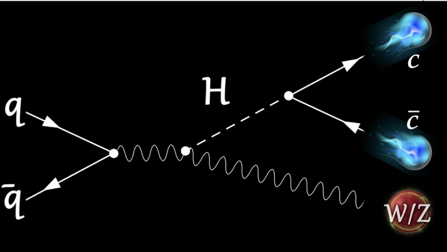

D2.1 Point Particle#
D2.1.1 Definition#
The core concepts of Newtonian physics are often listed as being forces and energy. Forces detail interactions between objects or systems, while energy details the state of an object or a system, and both can become quite complicated depending on the interaction(s),object(s), and/or system(s). To gain some basic understanding of the concepts and develop foundation skills, we employ the concept of a point particle.
A point particle is a hypothetical object in the physics world that is useful for introducing the concepts used in Newtonian mechanics. The characteristics of a point particle are:
- It has mass (we will discuss later what mass is).
- Its size and shape plays no role in the context of the dynamics of the particle.
Wikipedia has a nice short page on the point particle
D2.1.2 Point Mass#
About Mass#
Mass is one of the fundamental concepts in physics that we all feel like we have a good understanding of, yet surprisingly, also one of the concepts we know very little about. The concept of mass reveals itself through various definitions depending on the physical approach:
A measure of resistance to change in linear motion (Newtonian definition of inertial mass).
A measure of amount of matter (also used as the chemistry approach).
Energy and mass equivalence in general relativity where mass and energy dictates how space-time curves.
A constant arising from a field, such as the Dirac field, interacting with the Higgs field in standard model of particle physics.
For our purpose, we will restrict the discussion of mass to the first two in the above list as we are dealing with introductory physics. However, just to make you aware: the others are fundamental ways of defining mass and make physics absolutely fascinating!
Before moving on, we may ask ourselves if the concept of a point mass even make sense. In our everyday macroscopic world it does not make sense at all. In fact, even electrons and quarks, which are some of the smallest particles we know of, are larger than a point in space. So what is a point mass? Well, according to symmetry breaking in the standard model of physics, the Higgs field interacts with bosonic and fermionic fields to provide mass to bosons and fermions (our two classes of particles). Interestingly, the broken symmetry also allows for massless particles which are known as photons. These field interactions can indeed take place at a single point, but for our purpose, the point mass or point particle is more of a conceptual feature as defined in section 1.
For more information:
Wiki
The CMS experiment at CERN
The True Nature of Matter and Mass
The Higgs Mechanism Explained
The vast majority of introductory textbooks will introduce the concept of mass together with Newton’s laws of physics for a point particle/object. In doing so, these textbooks will then swiftly apply the point particle/mass to systems like cars, balls, etc., which are obviously not point objects but without explaining why we can get away with it. From our definition of a point particle, we should now understand the implication: every object can be considered a point particle as long as its size and shape does not affect the dynamical analysis.
Later on, we will introduce the concept of a distributed mass system and the center of mass. At that point, we will also introduce the concept of mass as a measure of amount of matter in a substance through density and volume. For now, let us briefle define inertial mass according to Newton.
Definition of Mass: Newtonian Approach#
Mass of a point particle is defined through Newton’s famous second law (with assumptions)
where \(\sum F\) is the magnitude of the net force acting on an object with mass \(m\), and \(a\) is the magnitude of the resulting acceleration. Hence, mass can be interpreted as resistance to a change in motion, and we refer to this mass as inertial mass. To date, there has been no experiment showing that inertial mass differ from other definitions of mass (like the amount of substance in an object or gravitational mass, which we will define later in the semester). While classical physics does allow for differences between e.g. gravitational and inertial mass, general relativity shows us that they are indeed the same thing and that the definition of inertial mass is a proper definition.
The standard notation for the mass of a point particle is \(m\) (lower case \(m\)).
Example 1
Solution#
Inserting into Newton’s definition of mass, we have